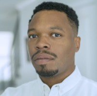

Independent Lens
40 people whose festival biography mentions Independent Lens. A mention can mean a job, a past job, a grant, a broadcast or an award: read the bio for which.

 Erika CohnFilmmaker, panelist · 3 editions, 2020–2024
Erika CohnFilmmaker, panelist · 3 editions, 2020–2024
- Ramona DiazFilmmaker, panelist · 2 editions, 2019–2020

Jon-Sesrie GoffPanelist · 2 editions, 2017–2021Smithsonian National Museum of African American History and Culture
- Johanna HamiltonFilmmaker, panelist, workshop leader · 2 editions, 2015–2018
- Judith HelfandPanelist, workshop leader, festival team · 2 editions, 2021–2022Chicken & Egg Pictures


 Hanna Lane MillerPanelist, filmmaker · 2 editions, 2018–2025
Hanna Lane MillerPanelist, filmmaker · 2 editions, 2018–2025
- Macky AlstonFilmmaker, panelist · 2024
 Madeleine BairPanelist · 2021
Madeleine BairPanelist · 2021 Yoni BrookPanelist · 2021
Yoni BrookPanelist · 2021 James BurnsFilmmaker · 2021
James BurnsFilmmaker · 2021
 Rachel FalconeFilmmaker, panelist · 2024
Rachel FalconeFilmmaker, panelist · 2024
 Beth LevisonFilmmaker, panelist · 2021
Beth LevisonFilmmaker, panelist · 2021 Evan MascagniPanelist · 2023
Evan MascagniPanelist · 2023 Emma D. MillerPanelist, filmmaker · 2024
Emma D. MillerPanelist, filmmaker · 2024 Samuel-Ali MirpoorianFilmmaker · 2024
Samuel-Ali MirpoorianFilmmaker · 2024 JoeBill MuñozFilmmaker, panelist · 2024
JoeBill MuñozFilmmaker, panelist · 2024- Marilyn NessPanelist · 2018
- Rajal PitrodaPanelist · 2024
 Rachel RaneyFilmmaker, panelist · 2024
Rachel RaneyFilmmaker, panelist · 2024 Bernardo Ruiz2024
Bernardo Ruiz2024 Nicole SalazarPanelist · 2021
Nicole SalazarPanelist · 2021 Jason SussbergPanelist · 2026
Jason SussbergPanelist · 2026 Brennan Vance2021
Brennan Vance2021